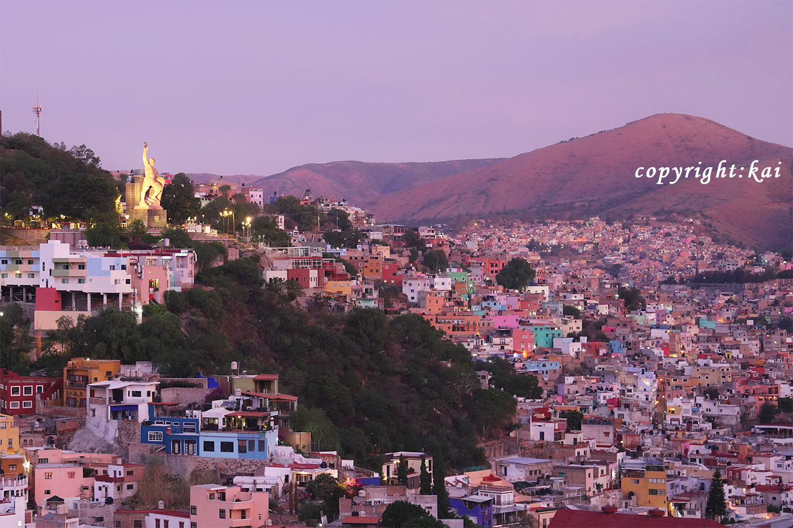

Yellowstone


Geographical Location: North America
Yellowstone is the first national park in the United States. It covers over 2.2 million acres, and provides an opportunity to see wildlife and explore geothermal areas. In fact, Yellowstone contains about half the world's active geysers.
These unique opportunities also bring out a lot of bad decisions among the tourists. Every year visitors injure themselves or the wildlife by getting close to the animals. You can see examples of people making bad decisions by visiting Yellowstone National Park: Invasion of the Idiots, Tourons of Yellowstone, or Cowboy State Daily.
Photo Gallery


London

Geographical Location: United Kingdom
As one of the most iconic cities in the world, London carries a rich history that is matched by its continuous growth and evolution. A powerhouse of culture, politics, and finance, it stands as a city where the past and present exist harmoniously side by side.
From the ancient towers that narrate tales of a regal past to modern architectural marvels that reach for the skies, London offers an unrivaled blend of history and modernity.
Photo Gallery


Mexico
Geographical Location:Guanajuato, Mexico
As the sun dips low in the sky, Guanajuato, the vibrant small town in Mexico, unfolds a spectacular tableau of hues and shadows that bewitch every onlooker. The historic town, celebrated as the backdrop for the acclaimed animation "Coco," transforms into a realm of dreams. Its vividly painted houses, basking in the warm golden glow of the evening sun, offer a picturesque sight that resonates deeply with the joyous and spirited theme of the beloved movie.
Guanajuato at twilight is a painting that comes to life, a perfect blend of reality and the fantastic world depicted in "Coco." The array of colors presented by the quaint houses form a harmonious canvas that radiates a tranquil yet vibrant energy as the day transitions to night. This little town, full of life and color, offers a surreal experience, inviting dreamers and artists alike to immerse themselves in its poetic scenery, alive with stories and rich cultural tapestry.
Photo Gallery


Niagara Falls


Geographical Location: North America
Niagara Falls is located on the border between Canada and the United States. Connecting Lake Erie and Lake Ontario, Niagara Falls has the highest flow rate of any waterfall in North America.
Niagara Falls draws in thousands of visitors every year, and for good reason. As such, there are numerous things that you can see while you visit the falls, and it is very easy to make a full trip out of seeing this wonderful sight.
Photo Gallery